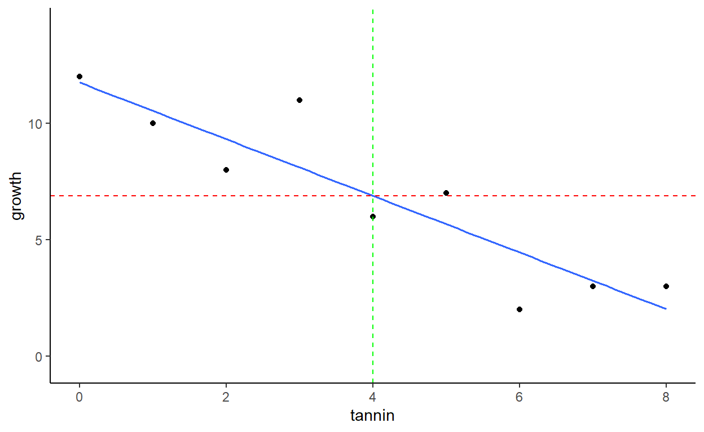

ANOVA: a common output from linear models
Introduction
You have already used the Anova command when you looked
at the outputs from some of your earlier linear models. It can be used
on linear models where the explanatory variable(s) are categorical or
continuous. We have used it to find the degrees of freedom, F-values and
p-values. But it is important to think more about how ANOVA actually
work.
To refresh your memory of how R summarises the results of linear models, re-create the caterpiller growth and crop linear models you have already used. Remember that
- The
caterpillersdata.frame contains two columnstanninandgrowth - The
crop_growthdata.frame contains two columnssoilandyield
Create the linear models again using lm() making sure
you know which is your response and explanatory variable in each case,
use the summary() to show the detailed information about
model parameters. To show the full output, we will use the “base” R
command anova() rather than Anova() from the
car package for the ANOVA tables. The base R
anova() command produces more complex output, but it will
help you to understand how ANOVA works.
The solution is provided if you get really stuck, but try it on your own first.
head(caterpillers) # Remind yourself of what the data looks like!
caterpiller_lm <- lm(growth ~ tannin, data=caterpillers)
summary(caterpiller_lm)
anova(caterpiller_lm)
head(crop_growth)
crop_growth_lm <- lm(yield ~ soil, data=crop_growth)
summary(crop_growth_lm)
anova(crop_growth_lm)The outputs from the summary() function are slightly
different, as the caterpillers_lm has a continuous
explanatory variable, whereas the crop_growth_lm has a
categorical explantory variable. However, you’ll notice that the overall
format of the outputs from the anova() function is the
same.
The abbreviation ANOVA stands for analysis of variance yet the output table does not have anything described as a variance. Why?
So, now you can understand where the variances are, you might be wondering why do we test the importance of explanatory variables by their variances? or How does ANOVA work?
We will show this interactively, with examples similar to your
caterpillers and crop_yield datasets.
Variances with continuous explanatory variables
Your R output from the summary() function of the
caterpillers_lm results gave you the intercept and gradient
of your fitted line. Plot your original raw data and the fitted line to
remind you of what it looks like. Hint Use the
gf_point() and gf_lm() functions you have
already used:
gf_point(growth ~ tannin, data=caterpillers) %>%
gf_lm()Compare the intercept (where the fitted line crosses the vertical
axis) and slope with the output from your earlier summary()
function of this model. Note that the slope is negative as the
observations decline from left to right.
How does lm() know where to put the fitted line?
The lm() function uses the technique of least
squares, i.e. it tries to minimise the sums of squares around
your fitted line and the observations. There are three sets of SS that
are calculated, which are then converted into the variances (Mean Sq)
used in your ANOVA table:
- SS explanatory variable (the bigger this is, the stronger the relationship between your response variable and explanatory variable)
- SS error (variation in your observations caused by random noise or measurement errors)
- SS total (Total variation in your data from all sources) SS explanatory + SS error = SS total.
The following interactive chart allows you to visualise these different components.
Caterpiller data
You can see that the SS for the explanatory variable is bigger than that for the SS for the error. When these are converted to variances (Mean Squares, MS), the difference is even bigger. In fact the explanatory variable (tannin) SS and MS values are identical. Why?
It is the relative value of the MS error and MS tannin that provides an indication of the importance of the tannin explanatory variable. Here is the output from your linear model:
Look at the value headed F-value. This is 30.97. Can you see how it has been calculated?
\[ \mbox{F-value} = \frac{\mbox{MS tannin}}{\mbox{MS error}}=\frac{88.82}{2.87}=30.97\]
For this reason the F-value is often called the F-ratio. The larger the F-value the more important the explanatory variable. You can see that if the MS tannin is big, and the MS error is small, then the F-value will be bigger.
How is the p-value calculated?
The p-value represents the probability of getting the observed F-value, for the given degrees of freedom (1 and 7 in this case), if there was no effect of tannins . Yes, I agree that is a bit back-to-front, but a mad statistician called Sir Ronald Fisher (hence F-value) came up with this idea in the 1920’s. Hence, the lower the p-value, the bigger the assumed effect of the explanatory variable. I’ve put in the word “assumed” in bold, because the p-value is the probability that tannin is not doing anything to the growth.
Interactive to explain ANOVA with continuous explanatories
This interactive allows you to play with the “noisiness” of your tannin and growth data. Obviously, in the real world you can’t do this, but it will help you understand how the SS, MS, F-value and P-value change as the data fit the model better or worse. The R-squared statistic is also displayed. You can also use a slider to adjust how many observations are in your data (if only collecting more data was this easy!). Play with both sliders, then answer the questions below. You will get slightly different outputs every time you adjust the sliders as there is random variation in the data.
Adjust noise and observations
How does lm know where to put the fitted line?
It uses the technique of Least Squares. Basically it tries to minimise the MS error. If you look at the fitted line, you’ll see that it goes through the mean value of the tannin (4.00) and the mean value of the growth (6.89) as shown below. It then simply adjusts the slope to minimise the SS error, and hence the MS error.

Variances with categorical explanatory variables
We’ll use the same approach to understand what is going on with
categorical data using the crop_growth dataset that showed
the change in growth on three different soil types. You will recall that
these data could be summarised easily via the gf_boxplot()
function, and the the lm() linear model indicated that soil
type had a significant effect on yield. The boxplot and Anova table are
shown below:
Again there are sums of squares for soil, a ‘Residual’ sums of
squares (noise in the data). Not shown in the table is the Total Sums of
squares. The process of calculation is identical to that for the
previous caterpiller example with continuous explanatory
variable, i.e.
\[\mbox{SS soil} = \mbox{SS total} - \mbox{SS error}\] but it may be less obvious how the various components are calculated, especially \(\mbox{SS total}\) and \(\mbox{SS error}\). As before, we’ll use an interactive to show three components. Note that as the explanatory variable is categorical, so that you can see the individual observations, they are simply shown in the order in the original dataset (i.e. row number):
Crop growth data
Remember. The mean squares (MS) are the variances, which are calculated by dividing the SS total, SS error and SS soil by their degrees of freedom (29, 27 and 2 respectively). It is the ratio of the MS soil to MS error that is used to calculate the F-value. The larger the F-value, the bigger the effect of soil.
Interactive to demonstration
The interactive below allows you to alter the number of observations per soil type, and the overall amount of noise (variability) in your crop yield data. Look at the ANOVA table printed below the graph, and notice how both the F-value changes and the associated p-statistic. The F-value on its own does not indicate whether the soil is significant. It is both the F-value and the degrees of freedom (calculated from the number of observations) that matter.
ANOVA variation demo
Summary
ANOVA tables can be produced from any type of linear model. By convention they are most commonly shown when the explanatory variable(s) is categorical, in what is sometimes called ‘one-way ANOVA’ or ‘two-way ANOVA’ etc. However they can also be produced from linear models where you have continuous explanatory variable(s), in what is often called ‘linear regression’ or ‘multiple regression’. Don’t get confused by the “labels” some books attach to these statistical analyses: they are all forms of linear models.